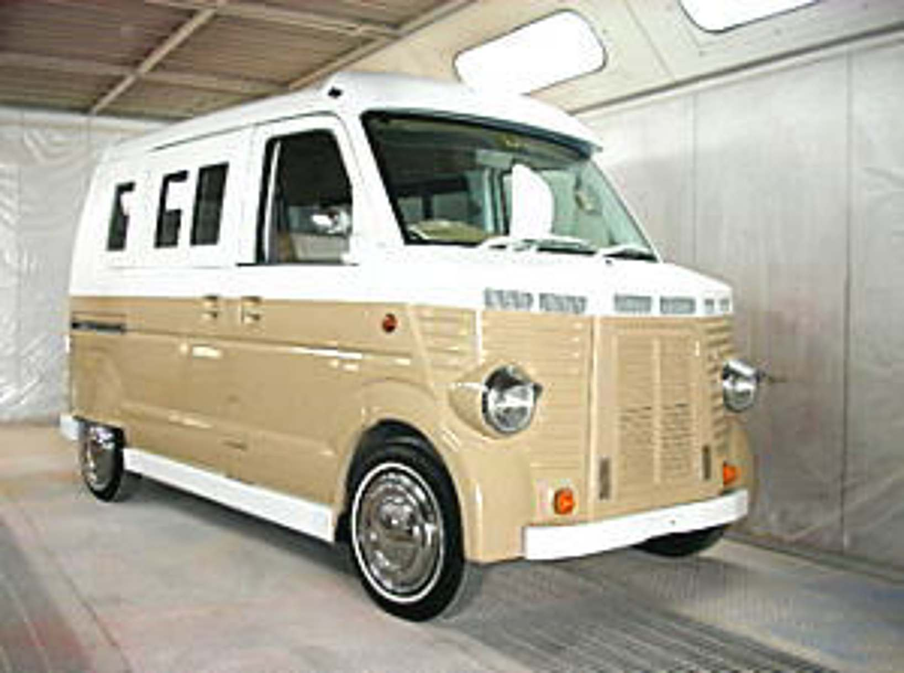
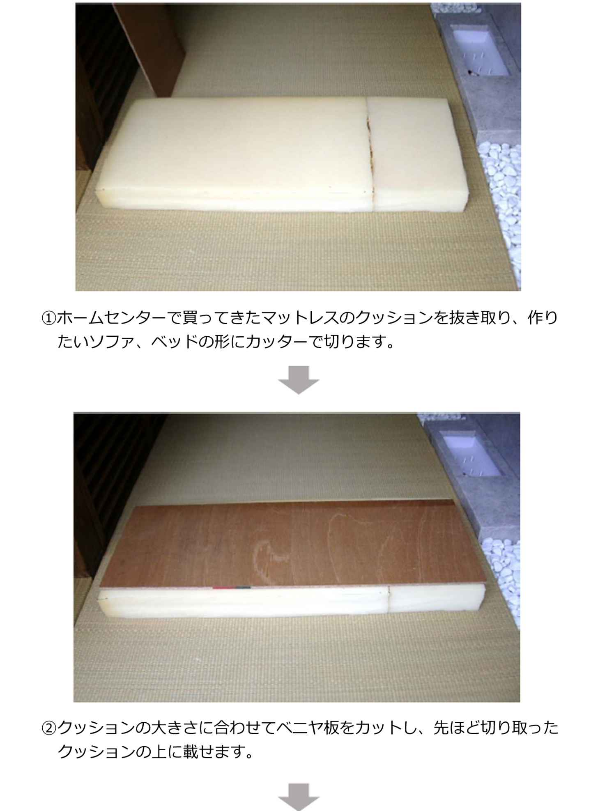
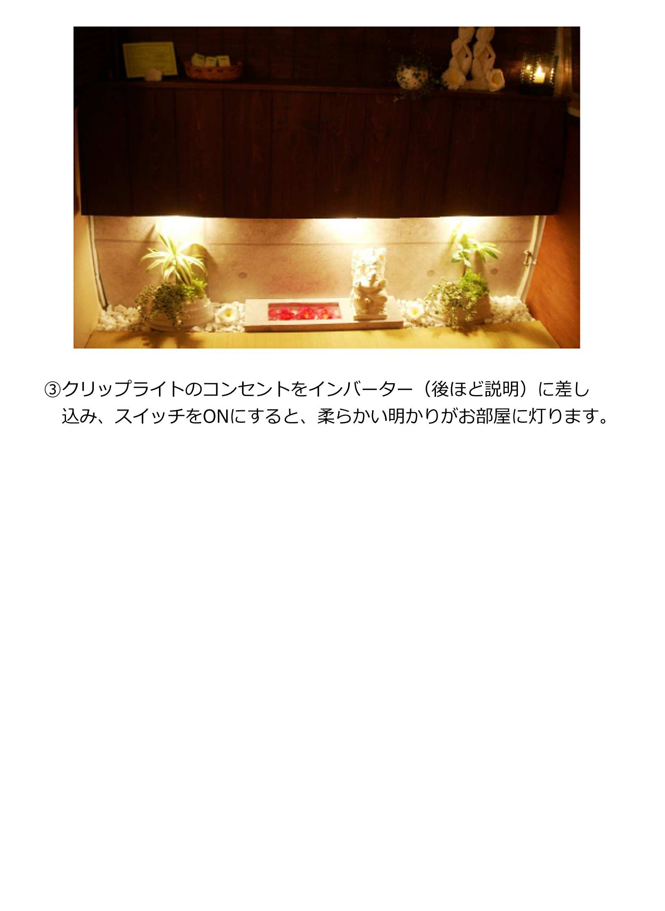
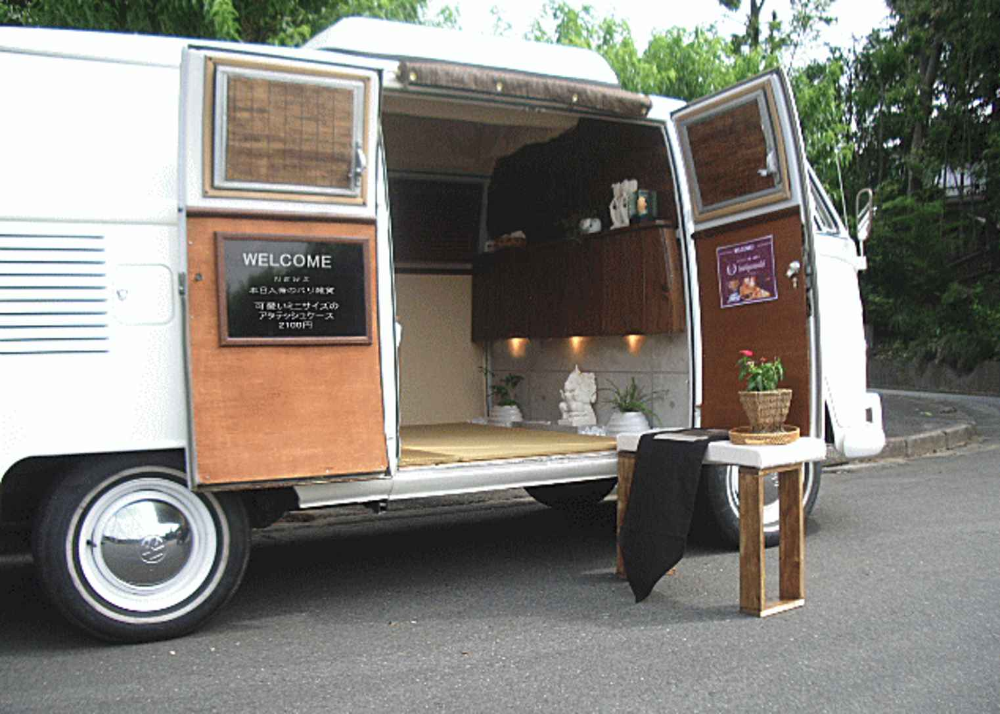
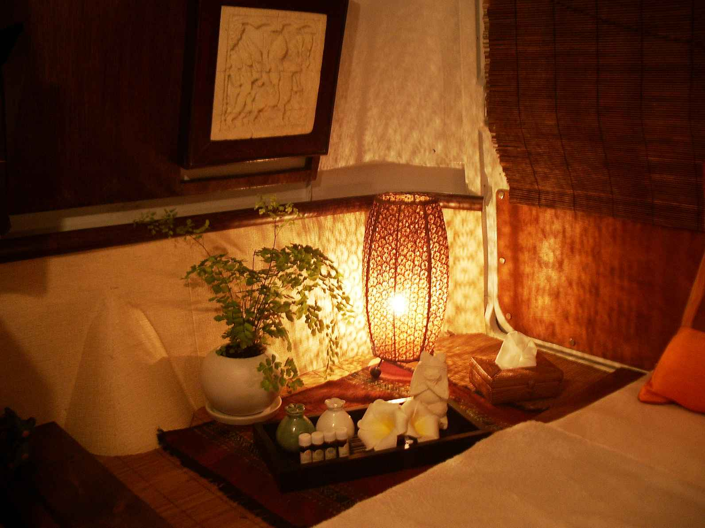

| あなたも家賃0円でサロンが持てる！移動サロン開業法 | |
| 鷲山 智三 | |
| (2017) | |
あなたも家賃０円でサロンが持てる！移動サロン開業法
第１章 移動サロンの６つの魅力
① 家賃０円でお店が持てる！
・開業したいけど同じようなお店が多すぎて成功できるか不安
・保障金や改装費など開業にはお金ががかかるから踏み出せない
・毎月の家賃を払っていけるか心配
・子育てをしながら自分の都合に合わせて仕事がしたい
と、悩んでいる方が多いのではないでしょうか？
特に家賃に関しては、梅雨時でお客様が少なくても、体調が悪くてお店に出られなくても、毎月払い続けなければいけません。
しかも開業している間は永遠にこれが続きます。
でも、もしも家賃０円であなたのお店が持てるとしたらどうですか？
毎月の出費がないから気楽に仕事ができます。
子育てをしながら自分の好きな時間に仕事ができます。
実は、そんな気楽にお店が持てる開業スタイルが移動サロンなのです。
移動サロンは家賃０円でお店を持つことができます。
家賃がかからないので毎月の家賃分が全てあなたの売上げになります。
仮にベースとなる車をローンで購入したとしても、毎月１～３万円で自分のお店が持てることになります。
そして、そのローンはいつか終わります。
初めに車を購入すれば、その後必要となるのはガソリン代くらいで済みます。
実は私自身、「店舗」、「出張」、そして「移動サロン」の三つのスタイルで開業をしてきました。
その中でも、「出張」や「移動サロン」のように家賃のことを心配しなくていいと言うのは、これほど精神的に気楽なことはありません。
お金の心配をしなくていいので、好きな時間に仕事ができます。
誰にも気を使わず自分のペースで大好きな仕事に没頭できます。
このように移動サロンは、家賃０円で気楽に自分のお店を持つことができる新しい開業法なのです。
② 料金設定が安くても十分な利益が出る！
移動サロンでお店を開いた場合、家賃などの大きな出費が無いので稼いだ分のほとんどが利益になります。
ですので例えば店舗型サロンの相場が５千円の地域の場合、出張費込みで５千円でも十分な利益を出すことができます。
お客様にとっては、お店に行って受けるのと同じ料金で自宅まで来て貰って施術が受けられるというのは非常にありがたいものです。
このように移動サロンは料金設定を安くしても十分な利益を出すことができるのです。
③ リピート率が高い！
移動サロンがターゲットととするお客様は、今までのサロンが取りこぼしてきた客層になります。
具体的には、
・子育てが忙しくて体のケアをしている暇がないお母さん
・仕事に疲れきってわざわざサロンに行くのが面倒な会社員の方
・今まで出張治療を頼みたかったけど自宅に入れるのに抵抗があった女性の方
このように「コリをほぐして欲しい！」「癒されたい！」という強い欲求はあるけれど我慢をしてきた人たちが移動サロンのターゲットとなります。
こうした強い欲求を持っているお客様というのは高確率でリピーターになります。
④ 出張スタイルと店舗スタイルのメリットを合わせた開業法
開業スタイルには大きく分けて２つあります。
店舗を借りて施術を行う店舗スタイルとお客様の自宅に伺い自宅内で施術を行う出張スタイルです。
私自身、両方のスタイルで開業をしましたが、それぞれメリット、デメリットがあります。
例えば出張スタイルは経費がほとんどかからないので稼いだ分のほとんどが収入になります。
ですので、がむしゃらに働かなくても自分のペースでのんびりと仕事ができます。
逆にデメリットはと言うと、やはり知らないお客様の自宅に上がるのはとても不安があります。
特に女性施術者の場合は、こうした不安を理由に出張スタイルを避ける人がたくさんいます。
また出張スタイルは店舗型に比べてお客様の信用度が低くなります。
一方、店舗スタイルのメリットは、自分のお店で施術ができるという気楽さがあります。そして信用も得られます。
逆にデメリットはと言うと、毎月の家賃や水道光熱費といった経費がかさむと言うことです。
実は、移動サロン開業法というのは、店舗スタイルと出張スタイルとが持つメリットを兼ね備えた開業スタイルになります。
具体的には、
・無駄な出費が少ない
（出張スタイルのメリット）
・自分のペースで仕事ができる
（出張スタイルのメリット）
・自分のお店で気楽に施術ができる
（店舗スタイルのメリット）**
このように移動サロンは、空いている時間に施術をしたいという会社員の方や子育てをしながら自分の都合に合わせて仕事をしたいと言う主婦の方でも、安心して気楽に稼げる開業法になります。
⑤ 出張分野は儲けやすい！
私が出張治療を始めたのは今から20年ほど前になります。
当時は出張を専門とした治療院やサロンがほとんどありませんでした。
ですので成功するまでにそれ程時間がかかりませんでした。
経営が軌道に乗りだしても競争相手がいないので集客はほとんどせず気楽に仕事ができました。
今はどうか？と言うと、その当時に比べると出張専門のお店も増えました。
しかし、隣を向けば同じ店があふれかえっている店舗スタイルに比べれば、まだまだガラ空き状態です。
このように出張分野は今も儲けやすい市場なのです。
⑥ 広範囲でお客様を集めることができる！
店舗を構えた場合は、主にその周辺に住んでいる人や仕事場が近くにある人たちがお客さまになります。
いわゆる地域密着型のお店です。
この地域密着型のお店というのは、例えば100人の見込客がいた場合、その100人をその地域の同業者同士で取り合うことになります。
見込み客の絶対数はそれ程増えることがありませんので同業店が増えれば増えるほどお客様を確保することが難しくなります。
特に今の時代は同じようなサロンや治療院があふれかえっているので開業してもアッと言う間に潰れていくお店も少なくありません。
その点、移動サロンは気軽に移動ができるので広範囲でお客様を集めることができます。
それこそ同業者のいない地域を探して転々と営業場所を変えることもできます。
このように移動サロンは広範囲でお客様を集めることができます。
第２章 移動サロン開業で気をつける事
① 国家資格者はここに気をつけよう！
移動サロンを始める際に気をつけなければいけないことがあります。
それは、国家資格を肩書きにして施術を行う事ができないという事です。
例えば、鍼灸師は移動サロンで針やお灸の施術をしてはいけません。
柔整師は、保険を適用した施術を行う事ができません。
なぜなら、こうした国家資格には施術を行う際の規制があるからです。
具体的には、施術を行うスペースの広さや消毒設備、換気設備の完備などが義務付けられています。
私も移動サロンを始める際に保健所へ出向き、今後、鍼灸などの国家資格の技術を車内で行えるようになる可能性はあるのか？
という質問した事があります。
その時の率直な感想は、「これは限りなく無理に近い・・」という印象でした。
それじゃ国家資格を持っている人は移動サロンを開業できないのか？というとそうではありません。
実は、国家資格者でも移動サロンを開業できる方法があります。
それは国家資格者としてではなく、整体士やセラピストなどの民間療法士として開業する方法です。
こうした民間療法士については、現時点で開業時の規制がありません。
庭先でパラソルとベットを置き青空サロンをするもよし、バリ雑貨を販売する雑貨サロンを作るもよし、どんな場所でも、どんなスタイルでも自由に開業する事ができます。
このように国家資格者が移動サロンを始める場合は、セラピスト、整体士という肩書きで始めるようにしましょう。
② やっぱり集客力は大事
移動サロンで開業している人は全国でも少ないので軌道にのれば一人勝ちできる市場です。
またその希少性からリピート率も高く口コミも増えやすいというメリットもあります。
だからと言って移動サロンを開業すればすぐにお客様が集まるかと言うとそうはいきません。
移動サロンも店舗スタイルと同じように集客力が絶対に必要になります。
集客の中でも一番大事なのは新規のお客様を集めるという作業です。
例えばあなたがターゲットとする客層が20代、30代の若い女性の場合ですと、ブログやフェイスブックなどのＳＮＳを使った集客が非常に効果的です。
また高齢の方をターゲットにする場合は、ネットだけでなくチラシなどの紙媒体を使った方が即効性があります。
またリピーターを増やすためには需要のあるメニューを揃えておく事も大事になります。
このメニュー作りの秘訣につきましては、第５章よくある質問Ｑ＆
Ａ ④
成功率の高いメニュー作りの秘訣でお話しします。
このように、移動サロンで成功するためには、集客力とメニュー作りがとても重要なポイントになります。
第３章 移動サロン車を選ぶポイント
移動サロンに人気の４種類の車
移動サロンを始めるにあたって多くの方にご相談頂くのが、「どういう車を選べば良いのか？」という事です。
これは車の好みもありますし、また予算などの問題もあるかと思います。
そこで移動サロンにオススメな４種類の車を紹介しながら、あなたに合った車選びをしていきましょう。
① ワーゲンバス
【アーリータイプ】
私の場合、古い車が好きでしたので移動サロンを始めるならワーゲンバスの中でもアーリータイプと決めていました。
「実物は見たことないけど、この車は知っている！」という人が多いのではないでしょうか？ディズニーの「カーズ」という映画に登場したり、ドラマやＣＭにもよく出てくるとても絵になる車です。
この車の最大の魅力は、とても可愛い顔つきから女性や子供にウケが良いということです。
その証拠に、これまでにカフェやクレープなどの移動販売として活躍してきた車には、このワーゲンバスをベースとしているものが非常に多く見られます。
また、車自体は1960年代～製造された非常に古い車にもかかわらず、今でも部品が豊富に揃っているため、万が一故障をしても安心して修理をして貰えます。
ただし、こうした古い車には、オーナーになって始めて分かるデメリットもあります。
その中でも一番苦労するのが故障の多さです。
例えば、普通に道路を走行していていきなりエンジンが止まってしまう、ライトが点かなくなる、クーラーの効かなくなる
このように現代の車ではありえない事が起こります。
ですので、古い車で移動サロンを始める場合は、必ずメンテナンスをしてくれるお店を探し定期的に見てて貰うことが大事になります。
こうしたメンテナンスをしっかりとしておけば突然の故障などもほとんどなく安心して乗る事ができるようになります。
見た目が可愛いだけではなく車の大きさも室内の広さもサロンとして使うには程好いサイズ。こんなカワイイ車で自分のサロンが開けたら、きっと毎日が楽しいに違いない。
同じワーゲンバスでも年式が新しく見た目も可愛い車もあります。
【レイトタイプ】
アーリータイプより製造年式が新しく運転もしやすく故障も少なくなりました。さらに程度の良いものが安く購入できるのが嬉しい。実用性を重視するならこちらのタイプがお薦め。

② シトロエンH（アッシュ）トラック
かつて、テレビ番組でクレープの移動販売車として一躍有名になったのがこのシトロエンＨトラックです。
この車の最大の特徴は、室内がとても広々としていること。
例えば身長180センチの人が真っ直ぐ立っても余裕があるほど天井が高いので、「開放的な空間で施術をしたい」「全身のアロマやエステのように患者さんに寝て貰った状態で施術をしたい」という人には最適な車です。
高級感漂うオシャレな外観なので、「バリ式」や「英国式」サロンのイメージにピッタリな車。室内も充分過ぎるほど広いので、家賃のかからないミニ店舗として活用できる。
逆に、デメリットはと言うと、車体のサイズが大きいため女性には運転しづらいこと。さらに、部品を入手するのが非常に困難なため、修理に時間がかかってしまうという難点があります。
私個人的な意見としては、この車で移動サロンを行う場合は、例えばカフェや雑貨屋さんなどの店先に場所を借りて固定式移動サロンとして活用するスタイルがおすすめです。
③ ロコバス（国産軽自動車）
さて、今までかなりマニアックな車を紹介してきましたが、ここで
「私にはそんな手間のかかる車は維持できない」
「とにかく維持費が安くて経済的な車がいい！」
というあなたにオススメの車をご紹介します。
実は、これから紹介する車は国産の軽自動車を改装したかわいい車になります。
（※）著作権の問題上、画質が悪くなっております。ネットで「ロコバス」や「ワーゲンバス 軽自動車」で検索して頂くと色々なサイトで写真をご覧頂くことができます。
【 ロコバス ワーゲンバスアーリータイプ 】
【 ロコバス ワーゲンバスレイトタイプ 】
本物のワーゲンバスとは違い、国産の軽自動車をベースにしているので台数も豊富で、あなた好みの色、形のカワイイ車がお手頃価格で手に入れることができる。
【 ロコバス シトロエンＨトラックタイプ 】

フランス産のシトロエンH トラックを国産の軽⾃動⾞で再現したこの⾞は存在感たっぷり。
街中でも滅多に⾒かけないので、この⾞でサロンを開けば注目度アップ＝宣伝効果は絶⼤である。
こうしたロコバスの最大のメリットは、何と言っても経済的ということ。例えば、自動車税は普通自動車が年間29,500円～に対し、軽自動車は10,800円で済みます。燃費も非常に良いのでガソリン代も安く抑えられます。
さらに今まで紹介した外車とは違い、故障も少なく維持費も比較的かかりません。ですので、できるだけお金をかけずに移動サロンをやっていきたいというあなたには最適な車になります。
逆にデメリットはと言うと、室内スペースが狭いために施術メニューが限定されてしまうということです。
例えば、アロマや整体などで患者さんに寝て頂いて全身を施術をしたい場合は、非常に窮屈な思いをさせることになってしまいます。
ただし、こうしたデメリットをプラスに変える戦術もあります。その方法は第４章移動サロンの成功戦術の②
でご紹介します。

④ ワンボックスカー（ハイエースなど）
移動サロンの開業を考えている方の間で特に人気なのがハイエースなどの普通車のワンボックスカーです。
施術を行うには十分な広さがあり、また国産車ですので故障などの心配もほとんどありません。
またハイエースにはベッドキットなども販売されているので、これだけで簡単に施術場所を作ることができます。
外観は商用車のクールなイメージが強いですが、カッティングシートやカッティングステッカーなどでオリジナルのロゴやキャラクターを貼り付ければオシャレな移動サロン車を作ることができます。
第４章 移動サロンの成功戦術
① 予算を抑えた移動サロン開業法
「できるだけ予算を抑えて移動サロンを始めたい！」
そんな方にオススメの方法をご紹介します。
まず一つ目は、自家用車と移動サロン車を兼用する方法です。
移動サロンとして使う時以外は自家用車として活用します。
そうすれば、移動サロンが軌道に乗らない内も無駄になる事はありません。
完全予約制にしておけば、予約が入った時だけ折りたたみ式ベッドを広げたり、簡易の施術ベッドを敷くだけで移動サロンに早変わりします。
移動サロンに限らず店舗型でもとにかく無駄をいかに省けるかが成功のカギとなります。
② メニューを絞った移動サロン開業法
そして二つ目は、「施術メニューを絞った」移動サロンを始めるという方法です。
例えば、全身のボディケアとリフレをしているセラピストの方でしたら、移動サロンではリフレのみを行うようにします。
足の施術だけでしたら、ベッドをフラットにしなくてもイスに座った状態で施術が行えます。
つまり軽自動車のような小さいスペースでも施術が可能になります。
軽自動車ですと、自動車税やガソリン代などの維持費も安く済みます。
また、可愛い外観にカスタムした車もたくさんあり移動サロンをより楽しむ事ができます。
「それじゃ、全身のボディケアはどこで行えば良いの？」と思う方がおられると思います。
実は移動サロンを始める方には、移動サロンを始めたらそのスタイル一本でやって行こうと決めてしまう方を多く見かけます。
ですが何も一つのスタイルに固執する必要はありません。
お客様の中には、「自分の家の中でゆったりやってもらった方がありがたい！」と言う方もおられます。
例えば、まだ産まれたばかりのお子様をお持ちのお母さんは、子供をそばに置いて施術を受けたい、と言う方もおられます。
そんな時は、お客様のご自宅で施術を行えばいいのです。
また中には、気分を変えて治療室で受けたい！と言う方もおられます。
そんな時は、自宅の一室に来て頂き自宅サロンで施術を行えばいいのです。
全く面識のないお客様の場合は、自宅に入れる側も入る側も不安なものです。
ですが、一度お会いしていればその不安もお互いに解消されます。
また立派な自宅サロンがない方でも、１度お会いしたお客様ならそんなに綺麗に飾る必要はありません。
なぜならお客様は、あなたの技術と人柄を評価しているからです。
このように移動サロンを１つの入り口として考えれば車の選択肢も広がります。
③ 固定式で開業する方法
カフェやクレープなどの移動販売車の中には、雑貨屋さんや服屋さんの店先に車を置き、固定式で営業をしているお店もあります。
こうした営業場所があれば、店舗代に何十万円も払わずに駐車場代だけで営業する事ができます。
また万が一その場所で経営が上手く行かなくても色々な場所に気軽に移動できるというメリットもあります。
こうした営業場所ですが、どのように見つければいいのか？というご質問をよく頂きます。
例えばあなたが、「この雑貨屋さんの前で営業がしたい」という場合は、直接オーナーさんに交渉する事になります。
また、軒先・ＣＯＭという営業場所を紹介しているサイトもありますので利用してみるといいでしょう。
第５章 よくある質問Q&A
① 施術中の冷暖房はどうすればいい？
施術中の冷暖房はどうしたらいいですか？
これは車の種類によって色々な方法があります。
例えば、私の移動サロン車には元々冷暖房の設備が付いていませんでした。
仮に付いていたとしても、ワーゲンバスなどの古い外車はエンジン音が大きいため備え付けの冷暖房をかけたままの施術はお勧めできません。
そこで私が使用していたのはこちらになります。
・冷房設備 どこでもクーラー（コロナ製）
その名の通りどこにでも持ち運びができるクーラーになります。
女性の方ですと少し重いかもしれませんが、底にタイヤが付いているのでゴロゴロ転がしながら移動させることができます。
車内を冷やすくらいでしたらどこでもクーラーで十分対応できます。
尚、こうした電化製品を車の中で使う方法については②
でご紹介します。
次に暖房設備についてです。
私が使用していたのはこちらになります。
・暖房設備 カセットヒーター（象印）
こちらのカセットヒーターは小型で持ち運びも楽な上、見た目もレトロ感があり私自身とても気に入って使っていました。
サイズは小さいですが車内程度の広さですと、これで十分暖まります。
ただしこちらはキャンプなどの野外で使用するものになります。
使用される場合は、個々の責任で十分換気にお気をつけ下さい。
また小さなファンヒーターをサブバッテリーや発電機につなげて使用する方法もあります。
冷暖房設備に関しては、ここで紹介したもの以外にも、キャンピングカーのサイトなどを検索すると色な方法が掲載されていますのでご参考にして下さい。
また国産車をベースとした移動サロンの場合、一番簡単なのはエンジンをかけた状態で元々車に装備さている冷暖房を使用するという方法です。
車の冷暖房が使えれば、サブバッテリーのような電気切れの心配をする必要はありません。
でも、エンジン音が気になるのでは？と思う方もおられると思います。
こうした騒音対策として参考になるのが人通りの多い駅中のサロンです。
例えば私が行ったことのあるサロンは、お店と路面の間に壁がありませんでした。
つまり人の歩く音、話し声が直接お店に中に入ってくる状態です。
こうした騒音に対してどういう対策をしていたかというと、お客様にヘッドホンをして頂きリラックスできる音楽を流しながら施術を行っていました。
こういうスタイルは、何も知らずにいきなり強制されると非常に違和感を感じます。
ですが、お店の看板やホームページなどで知っていればそれ程抵抗は感じないものです。
このようにエンジンをかけたまま施術を行う場合は、騒音が気にならない対策を考え事前にお客様にご了承頂いておくと良いでしょう。
② 車内で電気を使うにはどうすればいいのか？
車のエンジンを切った状態で施術中にランプを灯したり、音楽を流したり、あるいはエステ器具を使用したりと、車内で電化製品などを使いたい場合はどこから電源を引けばいいのか？というご質問をよく頂きます。
基本的に、こうした電気設備につきましては、非常に危険性を伴いますので専門の方にお任せすることオススメします。
この点をご理解頂いた上で、私が装備した部品やその手順についてお話します。
まず最初に私が備えたものは次の３つになります。
１、サブバッテリ（ディープサイクルバッテリー）
簡単に言うと「電気が詰まった箱」です。電気がなくなればまた充電して使うことができます。
私はディープサイクルバッテリーというキャンピングカーなどで用いられるバッテリーを使用していました。
このバッテリーの特徴は容量が大きいので、かなりの電気を使ってもなかなかなくなりません。ですので頻繁に充電をする手間が省けます。
（参考）私の購入商品
G&Yuディープサイクルバッテリー105A
税込み送料込み12,715円（当時ネット通販にて購入）
ただし１つのサブバッテリーでは長時間電気を使用することはできません。
ですので大容量の電気を必要とする場合はいくつかのサブバッテリーをつないだものを装備しておきます。
また発電機に直接コード差し込んで使う方法もあります。
発電機は音が大きいのがネックですが、今では稼動音の小さい発電機も販売されています。
また発電機の稼働音をできるだけ小さくするための防音ボックスなども売られています。
そしてもう１つは、お客さまの自宅や会社から電源を借り延長コードにつないで使用するという方法です。
会社やお店などに出向いて施術をする場合は、こちらの方法が最もオススメです。
２、サブバッテリーチャージャー
こちらの装置は、車のバッテリー上がりを防止してくれて、かつエンジンをかければ自動的にサブバッテリーに電気を溜め込んでくれる超便利箱です。
（参考）私の購入商品
サブバッテリーチャージャーSBC-001A
税込み送料込み11,380円（当時ネット通販にて購入）
３、インバーター
家の中で家電製品を使う時、コンセントを差し込みますがその差し込み口がこのインバーターになります。
これがあれば、パソコンや携帯の充電器などを差し込み車の中で家電製品が使えるようになります。
（参考）私の購入商品
パワーインバーターミニHG350/12V
税込み3,900円（当時ホームセンター・カー用品売場にて購入）
③ 都会で駐車スペースを確保するるには？
移動サロンを始めて一番最初に悩む事があります。
それは「どこに車を止めて施術を行えば良いのか？」ということです。
駐車場の確保に困らない田舎でしたら良いのですが、東京などの都会になると路上駐車は無理です。
そんな都会でどのように駐車スペースを確保すれば良いのか？
結論から言いますと、駐車スペースの確保は全てお客様にお任せします。
依頼を頂く度に、その周辺で路上駐車が可能なスペースを確保するのは非常に難しくなります。
これでは移動サロンを出動させる以前につまづいてしまいます。
ですので駐車スペースについては、お客様に確保、ご指定頂くようお願いします。
そして駐車スペースに関するトラブル等についても全責任をお客様に負って頂きます。
こうした注意点を、ホームページや依頼があった際に必ず伝えておくようにします。
こちらは、私の移動サロンのホームページに記載していた内容になります。
こんな事を言われたら依頼してくる人が減るんじゃないの？
そう思われる方もおられるかもしれませんが、トラブルを引き起こすくらいなら受けない方が無難です。
また私の場合もそうでしたが「どうしてもお願いしたい！」という方は、少し離れた場所に移動してでも駐車スペースを確保しご依頼されます。
逆にこうしたお願いをする事でより欲求の強いお客様が集まってきます。
このように施術を行う際の駐車スペースの確保は、お客様にお任せするようにしましょう。
④ 成功率の高いメニュー作りの秘訣
私の経験上、移動サロンを依頼するお客様の９割は女性のお客様になります。
例えば、小さなお子さまがいてサロンに行けないというお母さんや自分だけのスペースでリラックスして施術を受けたいと言うOLさんなどが多くなります。
つまり移動サロンのメニューは、女性にウケるモノを用意しておくと成功率が高くなります。
具体的に女性のお客様の需要が大きい施術メニューは次の通りとなります。
１、骨盤矯正、O脚矯正、小顔矯正などの美容系メニュー
２、リラクゼーションボディケア（ほぐし、アロマケアなど）
３、痛みの治療
特に１の美容系メニューは、店舗型のお店でも非常に成功しやすいメニューになります。
実際、骨盤矯正、Ｏ脚矯正、小顔矯正といった美容系メニューはマッサージ系の施術に比べて３～５倍集客が楽になると言われています。
確実に結果が出せる技術を持っていれば全国からお客様が集まってきます。
それくらい強い欲求を持っている方がたくさんおられます。
ですので骨盤矯正、Ｏ脚矯正、小顔矯正といった美容系メニューを用意しておくと成功率を高くすることができます。
第６章 実録！移動サロン製作日記
私が自分で移動サロンを造った理由
「移動サロンの内装を作るのに一体どれくらいのお金がかかるのか？」
いくら家賃などの無駄な出費が少なくても、開業するまでに莫大な費用がかかってしまっては意味がありません。
今現在活躍しているカフェやクレープの移動販売車は、そのほとんどが専門の車屋さんや大工さんに頼んで作ってもらっています。
そうなると気になるのが工賃です。
例えば、木材や塗料などの材料費が10万円で済んだとしても、その工賃で20万、30万円が余分にかかってしまいます。しかも、この値段は業者によってまちまちで制作期間が長くなるとその分費用がかさむことになります。
私も始めは誰かに頼んで製作してもらおうと色々探しましたが、そもそも移動サロン車の内装を製作してくれる業者自体がほとんどありませんでした。
そこで「業者に頼らずに、できるだけお金をかけずにサロンを作る方法はないだろうか？」と考えました。
その結果出した答えが、「自分で造る」という方法でした。
私は大工でも整備士でもありません。DIYの経験もほとんどない全くの素人です。
そんな素人でも移動サロンを作ることができるのか？
はい、できます！
その理由は、移動サロンはカフェやクレープの移動販売車とは違い、ガスや大容量の電気、給排水などの複雑な装備が必要ないからです。
つまり、プロの知識がなくても大丈夫なのです。
具体的に移動サロンを作る上で必要な作業は次の３つになります。
①
ベッド、イスなどの家具作り（ベッドだけでも十分）
②
室内の内装コーディネート
③
家電製品が使える電気システム作り
ここで、私がどのようにサロンの内装を造り上げたのか、その過程を写真付きでご紹介します。
ちなみに私が移動サロンを製作した時には見本となる移動サロン車が無かったため、完成させるまでに１年半という長い期間と30万円以上の無駄金を使うことになってしまいました。
でも見本があれば、できるだけお金をかけずにあなた好みの移動サロンが造れると思います。
是非ご参考にしてみてください。
① 内装構想図の作成
見栄えの良い内装を作るには、プロがコーディネートしたお部屋をそっくりそのままマネするのが一番簡単です。
そこで内装造りに取りかかる前に、雑誌やネットからおしゃれにコーディネートされた写真をピックアップし造りたい内装のイメージを決めました。
この作業をしておくと、作っている最中に「どうも上手くまとまらない！」ということがなく素人でもプロっぽい部屋を作ることができます。
② 内装の取り外し
③ サイドパネルの作製

④ 家具作り
⑤ ブラインドの取り付け
⑥ ソファ・ベッドのクッション製作

⑦ 床の製作

⑧ ダウンライト製作

第７章 バリ風移動サロン・写真集




おわりに
本書を最後までお読みいただきありがとうございます。
私がバリ風移動サロンを造ったのは今から９年前の2008年になります。
当時はカフェやクレープの移動販売車はたくさんありましたが、移動サロンと言うものは日本中どこにもありませんでした。
その為、移動サロンを完成させるまでに１年半という長い期間と30万円以上の無駄金を使うことになりました。
でも本書があれば、あなたも最小限のお金であなた好みの移動サロンが造れると思います。
尚、本書で紹介しました移動サロンは全くの素人が造ったものになります。
作業工程につきましては、ご自身の責任でくれぐれもお気をつけて行って頂きますようお願い申し上げます。
あなたの楽しいサロンライフのヒントとしてお役立て頂けましたら幸いです。
＜
著者プロフィール＞
鷲山智三
1971年 京都府出身 明治国際医療大学卒業・鍼灸師（国家資格）、美容整体師、ケアマネージャ（介護支援専門員）の資格を持つ
［実績］
オリンピック代表選手を始め実業団のスポーツ選手の治療を手がける一方、理学療法士の学校で講師を、またプロの鍼灸師、理学療法士などに技術指導を行う
開催する技術セミナーには全国から800人超のセラピスト、治療家が集まる
現在Amazonにてメディカル骨盤骨盤・O脚矯正法矯正法、実践に役立つ解剖学他4つのDVDを絶賛販売中
メディカル・サービス公式サイト http://medical-s.info